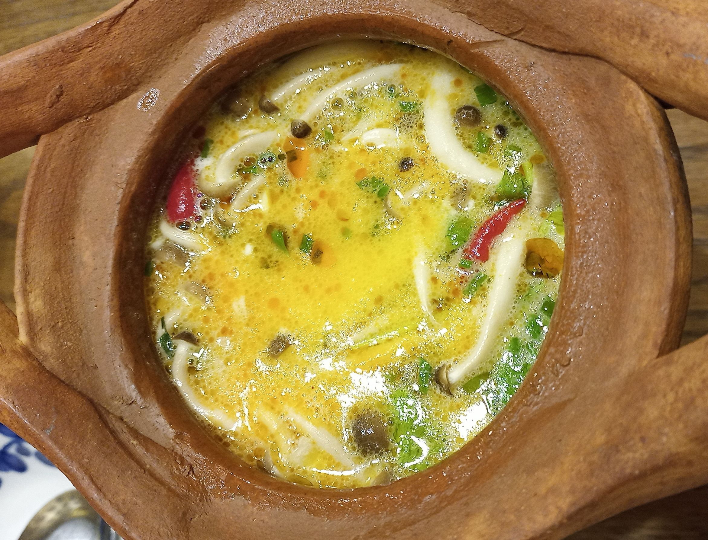

トムカーガイのレシピ
トムカーガイは、ココナッツミルクとハーブが香るタイのスープです。作り方を覚えたら、家でも簡単に本格的な味を楽しめますよ！
材料
- 鶏肉（もも肉や胸肉） - 300g
- ココナッツミルク - 400ml
- 鶏ガラスープの素 - 大さじ1
- レモングラス（細かく切る） - 2本
- カフィアライムリーフ - 3枚
- ガランガル（またはしょうが） - 1片
- 唐辛子（乾燥または生） - 1〜2本（お好みで）
- ナンプラー - 大さじ2
- 砂糖 - 小さじ1
- ライムの絞り汁 - 1個分
- パクチー（香菜） - 適量
作り方
- 鶏肉を一口大に切り、ガランガルは薄切り、レモングラスとカフィアライムリーフは軽く叩いて香りを出します。
- 鍋にココナッツミルクと鶏ガラスープの素を入れ、弱火で温めます。
- 鍋に鶏肉、ガランガル、レモングラス、カフィアライムリーフ、唐辛子を加え、軽く煮ます。鶏肉が煮えたらアクを取ります。
- ナンプラー、砂糖、ライムの絞り汁を加え、味を調整します。
- 最後にパクチーを加えて、軽く混ぜたら完成です！
ポイント
- 辛さは唐辛子の量で調整できます。お好みで調節してみてください。
- レモングラスとカフィアライムリーフは、タイ料理の風味を引き立てますが、ない場合は省略しても美味しいです。
- トムカーガイは温かいままで、ライムの酸味がきいていて、ココナッツミルクの甘さと相性が抜群です。